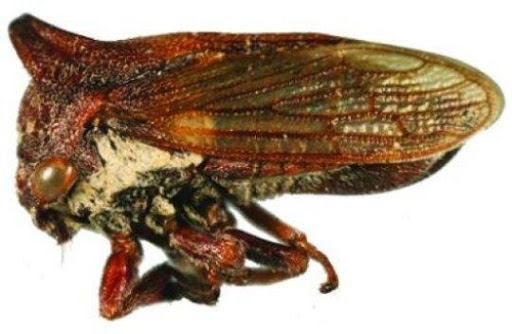
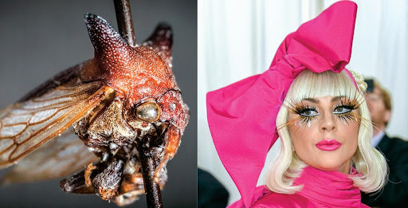
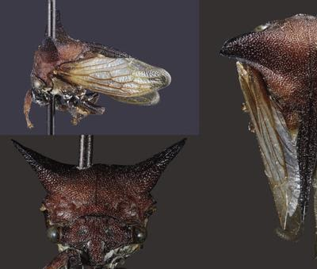
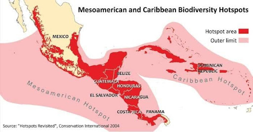
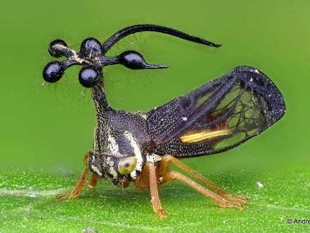
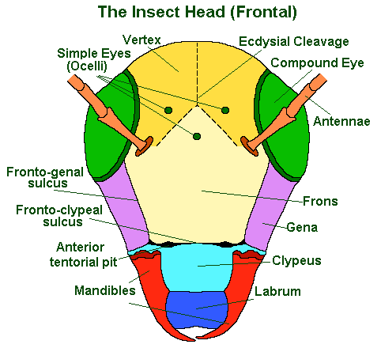
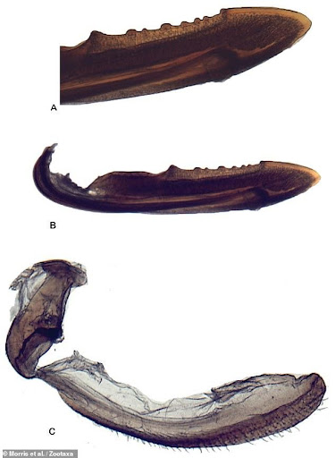

Treehopper Analogue of Lady Gaga
July 6, 2021 5:30pm ISTScientists who describe and name new species, taxonomists, come up with creative names, from celebrities to childish jokes. Brendan Morris, a PhD student at the University of Illinois at Urbana-Champaign is one such example of an entomologist whose passion for insects and music is revealed through her style of sharing the names of her insect discoveries with the names of musicians.[2]
Discovering and naming a new genus Treehopper Selenacentrus [Fig.1] after Selena Quintanilla, a Mexican-American singer-songwriter, was her first attempt in doing so and then she came up with another one! [2]

Interestingly, the 2nd insect discovery of Brendan shares its name with the pop diva Lady Gaga herself. The Lady Gaga bug, now known as Kaikaia gaga, is a darkish purple and red treehopper with two devilish horns protruding out the top. The bug marks the arrival of a new genus Kaikaia in insects, with K.gaga as its sole species.
Much like Lady Gaga's quirky persona [Fig.2], the Lady Gaga bug has a peculiar form and uniquely shaped horns which Morris compares to shoulder pads frequented by Lady Gaga. [2]

"If there is going to be a Lady Gaga bug, it is going to be a treehopper because they have got these crazy horns. They have this wacky fashion sense about them," Morris said. "They are unlike anything you have ever seen before."[3][4]

Morris has been an avid fan of the singer for years. Once, he saw the bug's uncanny resemblance [Fig.3]&[Fig.4] with the singer (symbol of surrealist style, which always astonishes her fans and paparazzi with her craziest, stunning, and visually arresting sense of fashion), he could not help but appreciate it. "It is just kind of their theme as a family of insects to have these very diverse and other-worldly forms that you would not expect from an insect," explained Morris. [5]
The genus Kaikaia originates from the Miskito word, Kaikaia, which means "to see." Miskito is a language indigenous to Nicaragua [Fig.5], where the Kaikaia gaga specimen was initially collected in the 1990s. Morris received the bug specimen and trays of other unidentified types of treehoppers from the Carnegie Library of Pittsburgh in 2012 and has been studying this particular insect since then.[9][10]

Naturalists are highly interested in treehoppers(family Membracidae) due to their odd and unusual appearance. They exist in vivid shades and have bizarre shapes popping out of their bodies, and the Lady Gaga bug is no different.
The treehoppers are highly diverse, and there are over 3500 species worldwide which look very different. They are plant-feeding insects with diverse morphological and behavioural patterns present in all zoogeographic regions in the world. They are easily recognised by their vertical face and grotesquely enlarged thorax which may extend anteriorly over the head to form one or more spines and expand posteriorly over the body to form a hoodlike covering. [3][8]

They have ornate pronotum called helmets, an adaptation that expands into shapes to enhance mimicry and camouflage, which resembles plant thorns (some of the treehopper species are commonly called thorn bugs) or leaves or like ants and wasps to avoid predation. [4][6][7]

However, even among this oddball insect family, K. gaga is unusual. “The frontoclypeus (The line (sulcus or suture) between the combined clypeus and frons, which is not externally visible.), which is kind of like the face, was shaped differently”- says Morris. [Fig.7][4]
The specimen's genitalia also looked unnatural. Entomologists analyse and compare individual species to identify characteristic differences in head and body shapes, leg,body hairs and genitalia [Fig.8]

According to what Morris and his co-author Christopher Dietrich wrote in Zootaxa, most species-rich treehopper subfamily Centrotinae "originated in North America or the Caribbean before dispersing into the Old World and South America. However, though K. gaga was discovered in Nicaragua, its genitalia shared characteristics with an Old World group. So, specimens of K.gaga needed to be analysed to gain complete knowledge about them.
According to Brendan Morris, there is currently a lack of complete information prevailing with the case of K.gaga, since, only the female specimens have been found and studied. Neither the information about the male specimens or nymphs nor their morphology is known.
The attempt to extract the DNA from the bug specimen was unsuccessful and the genetics remains unexplained! Nevertheless, there is still a strong hope from Brendan Morris to obtain more information when the active search for the original specimen is over in Nicaraguan forests and when more bugs are found. [3]
Tree-hoppers are understudied and funding is another challenge to proceed with hyper-specific work. There is no shortage of new species to describe but there is a shortage of people to describe them! While some people disapprove of his idea to name bugs after famous figures, entomologists like Brendan Morris hope that these names will bring more people around to admire these largely overlooked bugs. He expects that this terminology will draw in some much-awaited funding and research activities into these bugs.
References:
Author :
Gayathri
Related Articles
Camouflage: A strategy for survival
November 12, 2020 6:45pm IST
If we look into the Oxford dictionary for the meaning of camouflage we will get: “the way in which an animal’s colour or shape matches what is around or near it and makes it difficult to see”. They use it as a defensive mechanism as well as an offensive mechanism.

Apis mellifera- An astounding and venomous creature!
June 11, 2021
lethal and toxic bee venom of Apis mellifera is thus known as Apitoxin. But what causes such deadly symptoms? The main components of Apitoxin are ... Read more!
Spider vs. Your Friendly Neighbourhood Web Slinger
April 1, 2021
It’s hard to fathom but all the amazing powers that the fictional superhero possesses are inspired by a real-life species of the arachnids: the spider! What makes him a hero is nothing but a radioactive spider, no matter which iteration from the comics you pick up...